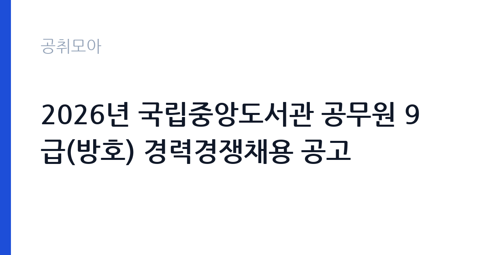

[국가기관] 2026년 국립중앙도서관 공무원 9급(방호) 경력경쟁채용 공고
문화체육관광부 국립중앙도서관 · 서울 · 마감 2026-11-04 (D-12) · 출처 나라일터

한눈에 보는 모집 조건
| 기관 | 문화체육관광부 국립중앙도서관 |
|---|---|
| 공고명 | 2026년 국립중앙도서관 공무원 9급(방호) 경력경쟁채용 공고 |
| 고용형태 | 정규직 |
| 근무지 | 서울 |
| 게시일 | 2026-10-23 |
| 마감일 | 2026-11-04 (D-12) |
지원자격, 이렇게 읽으세요
- 방호서기보 1명
- 접수 ~2026-11-04 마감
- 세부 조건은 원문 공고문 확인
모집단위는 방호서기보 1명입니다. 정규직 채용은 기간의 정함이 없는 근로계약을 전제로 합니다. 수습 기간을 두고 평가한 뒤 정규직으로 확정하는 절차가 일반적이며 기관의 인사 규정과 임금 체계를 적용받습니다. 서류 단계에서 요건을 충족하지 못하면 이후 전형을 준비할 기회가 없습니다. 학력·경력·자격 요건을 항목별로 대조해 표시해 두고, 경력은 재직증명서와 경력증명서로 입증해야 합니다. 증명서에 직무 내용이 구체적으로 적혀 있지 않으면 경력으로 인정받지 못하는 경우가 있으니 발급 전에 기재 내용을 확인하십시오. 자격증은 유효 기간과 등록 상태까지 확인해야 하고, 자격 취득 예정자로 지원하려면 공고문에 예정자 허용 조항이 있는지 반드시 봐야 합니다. 방호직 9급 경력경쟁채용은 관련 자격·경력 요건과 신체 조건을 함께 봅니다. 야간 당직과 교대 근무가 포함되므로 근무 형태를 수용할 수 있는지 먼저 판단해야 합니다. 공고문의 응시자격 표를 보면 자격 항목이 여러 줄로 나뉘어 있으므로, 각 줄을 하나씩 체크하며 본인 해당 여부를 표시해 두면 누락을 줄일 수 있습니다.
이 공고의 포인트
이 공고의 첫 번째 포인트는 고용 형태입니다. 수습 기간 평가를 통과하면 기간의 정함이 없는 신분이 되어 고용이 안정됩니다. 두 번째는 모집단위가 분명하다는 점입니다. 방호서기보 1명 단위로 선발하므로 배치 이후 담당 업무의 범위를 미리 가늠할 수 있습니다. 세 번째는 근무지입니다. 서울특별시 서초구 기준으로 근무지가 정해져 있어 통근 시간과 비용을 함께 계산해야 합니다. 접수 기간은 2026-11-02부터 2026-11-04까지로 길지 않아, 공고를 늦게 확인하면 준비 시간이 그대로 줄어듭니다. 선발 절차가 단순한 편이어서 서류와 면접 준비에 집중할 수 있습니다.
전형은 어떻게 진행되나
선발 절차는 원문 공고문에 단계별로 적혀 있습니다. 전형은 서류심사와 면접심사를 기본으로 하고 직무에 따라 필기나 실기, 체력검정이 추가됩니다. 서류 단계에서는 응시자격 충족 여부와 제출서류 형식을 확인하며 이 단계에서 탈락하는 지원자가 적지 않습니다. 면접은 직무 이해도와 경험을 확인하는 방식으로 진행되고 발표는 개별 통보나 홈페이지 게시로 이뤄집니다. 최종합격 이후에는 결격사유 조회와 채용 신체검사가 이어지며 이 절차에서 문제가 확인되면 합격이 취소될 수 있습니다. 구체적인 전형 단계와 배점은 공고문에 표로 정리되어 있으니 원문을 기준으로 준비하십시오. 경력 증명서에 직무 내용이 적혀 있지 않으면 인정받지 못할 수 있으므로 상세 기재를 요청하십시오.
이런 분께 추천해요
- 서울특별시 서초구에서 출퇴근이 가능한 분
- 방호·청사 관리 직무 경험이나 관련 자격을 갖춘 분
- 정규직 조건과 근무 기간을 확인하고 지원할 수 있는 분
지원 전 체크리스트
- 응시자격 요건을 충족하는가 — 경력은 증명서로 입증해야 합니다
- 수습 기간과 정규직 전환 조건을 확인했는가
- 제출서류 목록을 모두 준비했는가 — 누락 시 서류 단계에서 탈락합니다
- 접수 마감 2026-11-04 이전에 접수 방식을 확인해 제출했는가
모집 일정과 제출 타이밍
접수는 2026-11-02에 시작해 2026-11-04에 마감됩니다. 공고 게시일 2026-10-23부터 계산하면 준비 기간은 약 12일입니다. 우편 접수는 도착 기준으로 판정되는 경우가 많아 마감일 소인만 믿으면 안 됩니다. 제출 서류는 공고문에 적힌 순서대로 정리하면 담당자가 확인하기 쉬워 누락이 줄어듭니다. 서울 근무지는 대중교통 접근성이 좋은 대신 주차와 통근 시간이 변수입니다. 출퇴근 경로를 미리 확인하십시오.
직무 이해하기: 국가기관
이 기관은 공공 서비스 제공을 목적으로 설립된 공공기관으로, 채용 공고에 따라 부서별 실무 인력을 선발합니다. 기관의 사업 범위와 조직 구성은 홈페이지에서 확인할 수 있으며 채용 절차는 자체 인사 규정을 따릅니다. 국립중앙도서관은 청사 출입 관리와 자료 보존, 이용자 안내를 함께 운영합니다. 방호직은 출입 통제와 순찰, 방재 설비 점검, 야간 당직을 맡습니다. 직무 교육은 입사 후 기관 자체 계획에 따라 진행되므로 사전 경험이 없어도 시작할 수 있습니다.
자기소개서 작성 팁
방호·청사 관리 지원서는 직무 연관성을 앞세우는 것이 핵심입니다. 첫 문단에 지원 직무와 본인 경험을 한 문장으로 연결하고, 이어서 담당했던 업무의 규모와 결과를 수치로 제시하십시오. 문항별 글자 수 제한을 먼저 확인하고, 각 문항의 첫 문장에 결론을 배치하는 방식이 읽기 쉽습니다. 지원 동기는 기관의 어떤 사업에 기여하겠다는 한 문장으로 시작하고, 이어서 본인의 경험을 근거로 붙이십시오. 감점을 피하려면 다른 기관에 보낼 수 있는 범용 문장을 그대로 쓰지 않는 것이 중요합니다. 기관 이름과 사업명이 문장 안에 자연스럽게 들어가야 준비도가 드러납니다.
면접 준비 포인트
면접에서는 방호·청사 관리 직무를 얼마나 이해하고 있는지, 그리고 문화체육관광부 국립중앙도서관의 사업을 어느 정도 알고 있는지 확인합니다. 답변은 상황, 판단, 조치 순서로 정리하면 전달이 분명해집니다. 지원 기관의 최근 사업이나 조직 개편 내용을 확인해 두면 지원 동기 질문에서 차이가 납니다.
급여·근무조건 읽는 법
정규직 채용은 수습 기간 평가를 통과하면 기간의 정함이 없는 신분이 되어 고용이 안정됩니다. 공공기관 정규직은 기관의 직급별 임금표와 성과급 규정을 적용받고, 기본연봉에 경영평가 성과급이 더해지는 구조가 일반적입니다. 2026년 적용 최저임금은 시급 10,320원, 월 환산 2,156,880원(고용노동부 고시 제2025-47호)이며, 공무원 신분으로 임용되는 직위는 별도 봉급표를 적용받습니다. 기본연봉만 공개되고 성과급·수당은 공고문에 없는 경우가 많으므로, 지원 전 처우표와 인사규정을 함께 확인하십시오. 방호서기보는 국가공무원 9급 상당으로 국가공무원 봉급표를 적용받습니다. 2026년 공무원 봉급은 3.5% 인상됐고 9급 1호봉은 월 200만원 안팎으로 보도됐습니다(언론 보도 기준, 확정액은 봉급표 확인 필요). 방호직은 야간 당직과 교대 근무가 포함되어 야간·휴일 근무수당이 붙고, 정액급식비와 직급보조비가 별도로 지급됩니다. 위 수치는 공개된 봉급표·보도·유사 공고 기준이며, 이번 공고의 확정 금액은 첨부 공고문 처우표에서 확인하십시오. 공고문에 금액이 제시되지 않은 항목은 원문 보수표나 처우 설명에서 확인해야 하며 확인되지 않은 수치는 쓰지 않는 것이 원칙입니다. 비교할 때는 월 급여뿐 아니라 상여·명절휴가비·복지포인트·초과근무수당까지 포함한 연간 총액으로 계산하십시오. 기간제라면 계약 기간 동안의 총액을, 무기계약이라면 호봉 상승과 정년까지의 누적 소득을 기준으로 판단하는 편이 정확합니다.
자주 묻는 질문
- 선발 인원과 직급은 어떻게 되나요?
이번 공고의 모집단위는 방호서기보 1명입니다. 직종별 인원과 직급은 공고문 모집분야 항목에 표로 제시되어 있으니 원문에서 확인하십시오. - 근무지는 어디인가요?
서울특별시 서초구입니다. 세부 근무지와 출퇴근 조건은 원문 공고문의 근무예정지 항목에서 확인할 수 있습니다. - 보수는 얼마인가요?
정규직 신분에 따라 문화체육관광부 국립중앙도서관의 임금 규정 또는 보수규정을 적용받습니다. 본문에 확정 금액이 없으므로 첨부 공고문 처우표에서 기본급과 수당을 나눠 확인하십시오.
함께 보면 좋은 공고
[국가기관] 2026년 국립수목원 공무직근로자 채용공고 — 마감 2026-11-06[국가기관] 2026년 통일부 전문임기제 다급(영상PD) 경력경쟁채용 공고 — 마감 2026-11-02[국가기관] 2026년 제3회 공무직 근로자(행정사무원, 경비원, 청소원) 채용 공고 — 마감 2026-11-03출처: 나라일터 공개정보를 바탕으로 공취모아가 정리한 안내글입니다. 모집 조건·일정은 변경될 수 있으니 지원 전 반드시 원문 공고문을 확인하세요. 본 글은 정보 제공용이며 합격을 보장하지 않습니다.